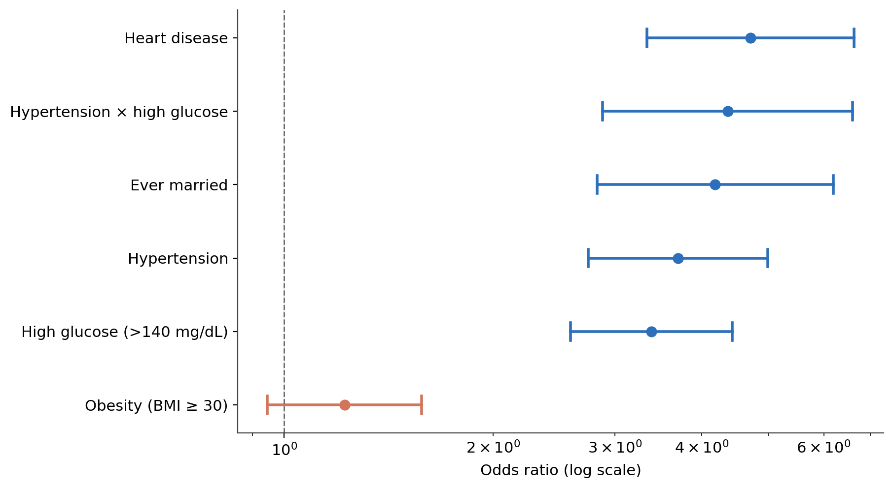
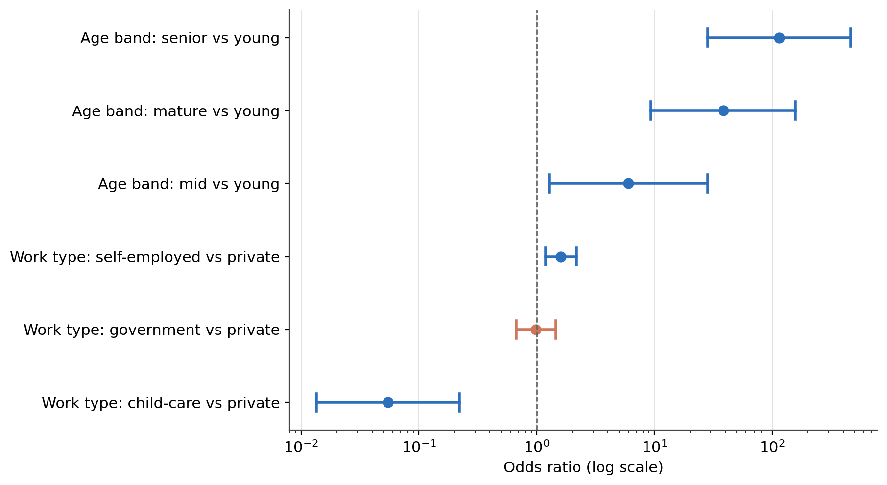
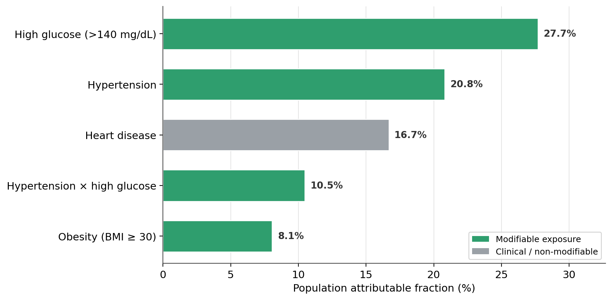
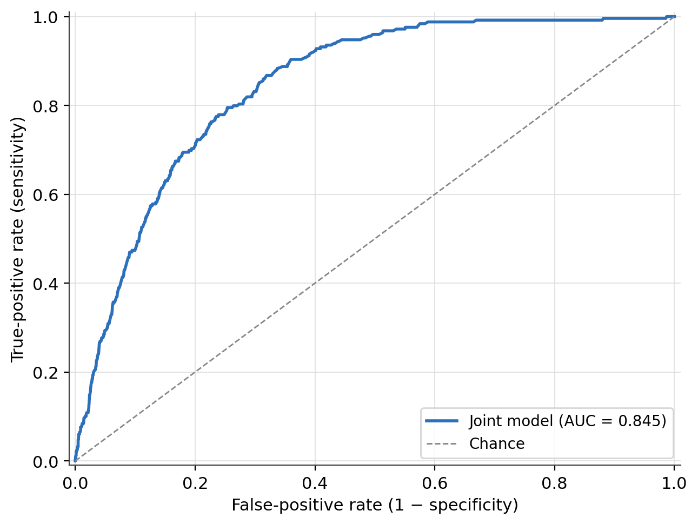
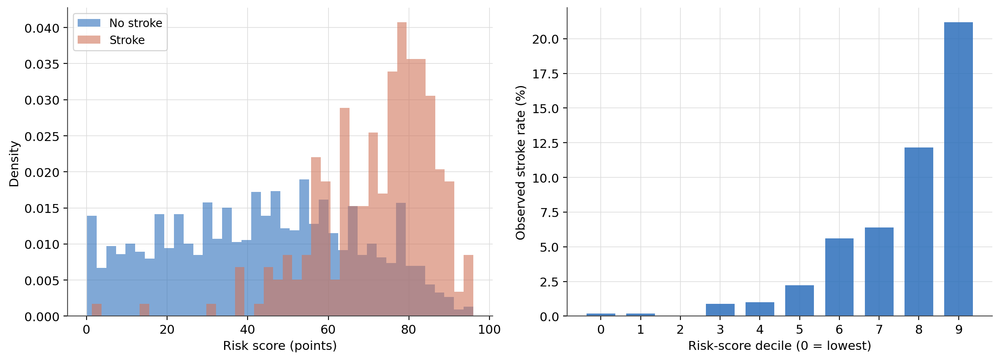

Clinical Risk-Factor Analysis of Stroke: Crude and Adjusted Odds Ratios, Confounding Diagnosis, and Population Attributable Fractions
A descriptive epidemiological study of a 5,110-patient cohort — inferential quantification of risk-factor associations, age-confounding adjustment, and modifiable-burden estimation.
A descriptive epidemiological analysis of stroke risk factors in a 5,110-patient cohort. Crude vs. adjusted: odds ratios before and after age adjustment. Confounding: the crude marital-status effect (OR = 4.18) collapses to 0.85 once age enters the model. Burden: Levin population attributable fractions rank elevated glucose (27.7%) and hypertension (20.8%) as the leading modifiable contributors. Diagnostics: Hosmer–Lemeshow calibration, ROC-AUC 0.845, and Mantel–Haenszel stratified analysis for effect modification.
odds ratio, confounding, population attributable fraction, logistic regression, stroke epidemiology, Mantel-Haenszel, attributable risk, Hosmer-Lemeshow, effect modification, Wilson confidence interval, Cramér’s V, descriptive risk score, biostatistics, Python, statsmodels
Abstract
This study quantifies the magnitude and uncertainty of the association between each of eight baseline risk factors and stroke in a cross-sectional cohort of 5,110 patients (249 stroke events; prevalence 4.87%). Crude odds ratios (ORs) were estimated from 2 × 2 contingency tables with Fisher exact tests; independence was assessed with chi-square tests and bias-corrected Cramér’s V, with Bonferroni correction for multiple comparisons. Epidemiological burden was expressed as attributable risk and the Levin population attributable fraction (PAF). Age-adjusted ORs were obtained from a sequence of logistic regression models, culminating in a joint model containing age and five predictors. The joint model was evaluated for calibration (Hosmer–Lemeshow), discrimination (ROC-AUC), and collinearity (variance inflation factors), and key associations were re-examined with Mantel–Haenszel stratified analysis and the Breslow–Day test for homogeneity. Five predictors showed significant crude associations (ORs 3.4–4.7). Age was the dominant predictor and confounder: the crude OR for having ever been married (4.18) collapsed to 0.85 after age adjustment, identifying it as a pure age artefact. Elevated glucose (age-adjusted OR = 1.83) and hypertension (1.60) retained independent signal; obesity was null across every analysis. Elevated glucose (PAF = 27.7%) and hypertension (PAF = 20.8%) were the leading modifiable contributors to cohort stroke burden. The joint model was well calibrated (p = .43) with an in-sample ROC-AUC of 0.845. All estimates are descriptive; the design does not support causal inference.
Keywords: stroke, odds ratio, confounding, population attributable fraction, logistic regression, Mantel–Haenszel, descriptive epidemiology
Introduction
Risk-factor epidemiology asks three questions in sequence: how large is the association between an exposure and an outcome, how certain are we of that estimate, and what survives adjustment for competing explanations. A preceding exploratory analysis of this cohort established which baseline variables carry a signal for stroke and identified age as the dominant correlate. The present study takes those variables and answers the three questions inferentially — through odds ratios and their confidence intervals, formal tests of independence, attributable-risk decomposition, and a staged logistic-regression adjustment for age.
The analysis draws exclusively on a single curated analytical table of 5,110 patients and 24 fields and does not revisit earlier processing stages. Four constraints inherited from the exploratory phase shape every interpretation that follows:
- Class imbalance. With 249 stroke-positive patients among 5,110, the positive rate is 4.87% and the negative-to-positive ratio is 19.5:1. This is a population fact, not a modelling nuisance. It implies that odds ratios carry asymmetrically wide confidence intervals on the upper side, and that absolute risk differences deserve as much interpretive weight as relative measures. Both are reported throughout.
- Body-mass-index imputation. 201 BMI values (3.93%) were imputed during data preparation; a sensitivity caveat attaches to every BMI-derived result.
- Smoking-status imputation. 1,544 smoking-status values (30.22%) were imputed. This rate is high enough that all smoking analyses are confined to Appendix A and treated as exploratory and hypothesis-generating only.
- Age as the dominant confounder. Age correlates with stroke at a point-biserial r of .245 (p < .001) and is associated with several other predictors. Age is therefore a mandatory covariate in every adjusted model.
Six fields were excluded from inferential analysis on substantive grounds established earlier: residence type and gender (Cramér’s V of .007 and .000 against stroke, with fully overlapping confidence intervals); the underweight-BMI indicator (a rare subgroup, n = 343, with too few events for a stable estimate); and three engineered interaction terms (age², age × glucose, age × BMI), which are reserved for predictive modelling and are not appropriate for epidemiological odds-ratio interpretation.
Method
Data source
The cohort is the widely used open Stroke Prediction Dataset (fedesoriano, 2021), comprising 5,110 patient records with demographic attributes, lifestyle indicators, medical history, and a binary stroke outcome. The file was processed through a medallion-style extract–transform–load pipeline (raw → cleaned → imputed → feature-engineered) and persisted as a columnar analytical table; the exploratory-analysis stage that precedes this study documented the cleaning, imputation, and feature-construction steps. The analytical table used here contains 5,110 rows and 24 columns, including the binary integer encoding of the outcome (stroke_num) alongside the original label column. No rows were dropped for the analyses below except where a predictor was missing for a specific model, in which case that model uses complete cases for its predictor set.
Variables and measures
The outcome is incident stroke (stroke = “Yes”), encoded 1/0. Binary predictors are hypertension, heart disease, ever-married status, elevated glucose (avg_glucose_level > 140 mg/dL), the joint hypertension-and-elevated-glucose indicator, and obesity (BMI ≥ 30). Multi-level predictors are work type (private, self-employed, government, child-care, never-worked) and a four-level age band (young 0–29 years, mid 30–44, mature 45–59, senior 60–82). Age also enters models as a continuous covariate in years.
Statistical analysis
Prevalence. Stroke prevalence was estimated overall and within strata, with 95% Wilson score confidence intervals (Wilson, 1927). The Wilson interval was chosen over the normal approximation because the latter has poor coverage for proportions near zero and can return negative bounds; at a prevalence below 5% this is a material choice.
Crude associations. For each binary predictor, a 2 × 2 table of exposure by outcome yielded an odds ratio with a 95% confidence interval and a Fisher exact p-value (Fisher, 1922). Fisher’s exact test was used throughout rather than the chi-square approximation because several exposed groups are small (the joint hypertension–glucose group has 178 members), and the exact test errs conservatively. For multi-level predictors, each non-reference level was compared with a fixed reference (private work; the young age band) using the same 2 × 2 machinery. Multiple comparisons within each predictor family were controlled with a Bonferroni-adjusted α.
Tests of independence and effect sizes. Each categorical predictor was tested against the outcome with a chi-square test of independence, reporting the statistic, degrees of freedom, and a p-value, together with a bias-corrected Cramér’s V (Bergsma, 2013) as a sample-size-robust effect-size measure on a common 0–1 scale. A Bonferroni-adjusted threshold (α* = .05 / 8 = .00625) governed significance across the eight-test family.
Attributable risk. For each binary predictor, attributable risk (AR, the exposed-minus-unexposed risk difference), attributable risk percent (AR%), and the Levin population attributable fraction (PAF; Levin, 1953) were computed. Exposure indicators are coded inconsistently across source columns (integer 1/0 for some, the labels “Yes”/“No” for others); all attributable-risk computations use label-aware exposure detection so that every predictor is represented. PAF is a descriptive quantity computed under a counterfactual assumption of causality that an observational cross-section cannot establish; it is reported as a burden-ranking device, not as evidence of a causal pathway.
Age-adjusted associations. A sequence of logistic regression models was fitted with statsmodels: an age-only baseline; six models each adding one predictor to age; and a joint model containing age with hypertension, heart disease, ever-married status, elevated glucose, and obesity entered simultaneously. Each model reports the Akaike information criterion (AIC), McFadden’s pseudo-R² (McFadden, 1974), and per-term odds ratios with 95% confidence intervals. These are descriptive epidemiological models; threshold selection, calibration for deployment, and out-of-sample validation belong to the companion predictive-modelling study.
Model diagnostics. The joint model was assessed for calibration with a decile-grouped Hosmer–Lemeshow test (Hosmer & Lemeshow, 2000); for classification behaviour with a confusion matrix at a 0.50 cut-point (reported for completeness only, given the 4.87% base rate); for discrimination with the area under the receiver operating characteristic curve (ROC-AUC); and for collinearity with variance inflation factors (VIF), using a VIF > 5 flag.
Subgroup analyses. Three stratified analyses (hypertension by age band, elevated glucose by age band, hypertension by gender) were run with Mantel–Haenszel pooling of stratum-specific odds ratios (Mantel & Haenszel, 1959) and the Breslow–Day test for homogeneity of odds ratios (Breslow & Day, 1980). A non-significant Breslow–Day result licenses the pooled estimate as the summary; a significant result would indicate effect modification.
Descriptive risk score. The joint model’s significant coefficients (p < .05) were rescaled to integer point weights by division by the smallest significant coefficient, and the resulting score was mapped across the cohort to check whether it recovers the observed outcome gradient by decile.
Software
Analyses were conducted in Python with statsmodels 0.14.1 (Seabold & Perktold, 2010), SciPy (Virtanen et al., 2020), scikit-learn (Pedregosa et al., 2011), NumPy (Harris et al., 2020), and pandas (The pandas development team, 2020). Figures were produced with Matplotlib (Hunter, 2007).
Results
Prevalence and absolute risk
At the cohort level, 249 stroke events in 5,110 patients give an overall prevalence of 4.87%, 95% CI [4.32%, 5.50%] — equivalently, 487 strokes per 10,000 patients. This is the denominator against which every relative measure below should be read: an odds ratio near 4 still describes a minority outcome within the exposed group.
The age stratification (Table 1) reveals the mechanism behind the overall rate. Prevalence rises from 0.13% in the young band to 0.79% (mid), 4.83% (mature), and 13.15% (senior). The confidence intervals for the mature and senior bands do not overlap, confirming the gradient is not a sampling artefact. The senior band alone contributes 181 of 249 events — 72.7% of all strokes — from 26.9% of the cohort. By gender, male prevalence (5.11%, 95% CI [4.25%, 6.13%]) and female prevalence (4.71%, 95% CI [4.01%, 5.53%]) have substantially overlapping intervals; the difference is not distinguishable from noise at this sample size, which is the basis for excluding gender from inferential analysis.
Table 1
Stroke Prevalence Overall and by Stratum, With 95% Wilson Confidence Intervals
| Stratum | n | Events | Prevalence | 95% CI |
|---|---|---|---|---|
| Whole cohort | 5,110 | 249 | 4.87% | [4.32%, 5.50%] |
| Age band: young (0–29 y) | 1,515 | 2 | 0.13% | [0.04%, 0.48%] |
| Age band: mid (30–44 y) | 1,018 | 8 | 0.79% | [0.40%, 1.54%] |
| Age band: mature (45–59 y) | 1,201 | 58 | 4.83% | [3.75%, 6.19%] |
| Age band: senior (60–82 y) | 1,376 | 181 | 13.15% | [11.47%, 15.04%] |
| Gender: male | 2,115 | 108 | 5.11% | [4.25%, 6.13%] |
| Gender: female | 2,995 | 141 | 4.71% | [4.01%, 5.53%] |
Note. CI = confidence interval. Wilson score intervals are used because the normal approximation has poor coverage for proportions near zero.
Crude associations for binary predictors
Five of the six binary predictors reach significance at α = .05, and all five survive the Bonferroni correction for six tests (α* = .00833). The exception is obesity (OR = 1.22, 95% CI [0.95, 1.58], p = .127). The largest crude association is heart disease (OR = 4.71, 95% CI [3.34, 6.64]); the wide interval reflects a small exposed group (n = 276). The joint hypertension–glucose indicator is similar (OR = 4.36, 95% CI [2.88, 6.61], n = 178 exposed). Ever-married status carries a crude OR of 4.18, 95% CI [2.83, 6.19] — but married patients in this cohort are systematically older, and the age-adjusted analysis below shows this association to be an age artefact. Hypertension (OR = 3.70, 95% CI [2.74, 4.98]) and elevated glucose (OR = 3.38, 95% CI [2.59, 4.43]) complete the set, both with intervals comfortably excluding 1. Figure 1 shows the pattern: four predictors cluster between OR 3 and 5, obesity sits just above the reference line with an interval crossing 1, and the small-denominator predictors carry correspondingly wide intervals.
Table 2
Crude Odds Ratios for the Six Binary Predictors (n = 5,110)
| Predictor | Exposed n | Events (exposed) | OR | 95% CI | Fisher p | Bonferroni |
|---|---|---|---|---|---|---|
| Heart disease | 276 | 47 | 4.71 | [3.34, 6.64] | < .001 | ✓ |
| Hypertension × high glucose | 178 | 30 | 4.36 | [2.88, 6.61] | < .001 | ✓ |
| Ever married | 3,353 | 220 | 4.18 | [2.83, 6.19] | < .001 | ✓ |
| Hypertension | 498 | 66 | 3.70 | [2.74, 4.98] | < .001 | ✓ |
| High glucose (> 140 mg/dL) | 821 | 93 | 3.38 | [2.59, 4.43] | < .001 | ✓ |
| Obesity (BMI ≥ 30) | 2,021 | 110 | 1.22 | [0.95, 1.58] | .127 | — |
Note. OR = odds ratio; CI = confidence interval. Bonferroni-adjusted α* = .05 / 6 = .00833. Rows are ordered by OR.
Figure 1
Crude Odds Ratios for the Binary Stroke Predictors (95% CI, Logarithmic Scale)

Note. Points are odds-ratio estimates; whiskers are 95% confidence intervals. Blue indicates an interval that excludes OR = 1; red indicates an interval that includes it. The dashed line marks the null (OR = 1). A logarithmic x-axis renders symmetric intervals symmetrically.
Crude associations for multi-level predictors
Work type produces a mixed picture. Self-employment carries a significant elevated OR of 1.61, 95% CI [1.19, 2.17], p = .003. Government work does not differ from private work (OR = 0.99, p = 1.00). Child-care work is strongly protective (OR = 0.05, 95% CI [0.01, 0.22]) — only 2 events among 687 people. The never-worked level (22 people, zero events) yields an undefined odds ratio and is omitted. These work-type patterns resist causal reading in an observational cross-section and would require age adjustment to interpret.
The age-band series is the most striking result in the study. Relative to the young reference, the mid band carries OR = 5.99, 95% CI [1.27, 28.27]; the mature band OR = 38.39, 95% CI [9.36, 157.50]; and the senior band OR = 114.58, 95% CI [28.38, 462.62]. The very wide intervals stem from the sparse young reference (2 events), not from sparse exposed groups; the lower bounds alone (9.36 and 28.38) establish the association as large and real. A senior-band patient has crude odds of stroke more than 100 times those of a young-band patient (Figure 2).
Table 3
Crude Odds Ratios for Multi-Level Predictors, Each Level Versus Its Reference
| Predictor : level (vs. reference) | Level n | Events | OR | 95% CI | Fisher p |
|---|---|---|---|---|---|
| Age band: mid (vs. young) | 1,018 | 8 | 5.99 | [1.27, 28.27] | .018 |
| Age band: mature (vs. young) | 1,201 | 58 | 38.39 | [9.36, 157.50] | < .001 |
| Age band: senior (vs. young) | 1,376 | 181 | 114.58 | [28.38, 462.62] | < .001 |
| Work type: self-employed (vs. private) | 819 | 65 | 1.61 | [1.19, 2.17] | .003 |
| Work type: government (vs. private) | 657 | 33 | 0.99 | [0.67, 1.45] | 1.00 |
| Work type: child-care (vs. private) | 687 | 2 | 0.05 | [0.01, 0.22] | < .001 |
| Work type: never-worked (vs. private) | 22 | 0 | undefined | — | — |
Note. Reference categories: private work (n = 2,925) and the young age band (n = 1,515, 2 events). The never-worked level is shown for completeness but is excluded from Figure 2 because the odds ratio is undefined.
Figure 2
Crude Odds Ratios for Multi-Level Predictors Versus Reference (95% CI, Logarithmic Scale)

Note. Points are odds-ratio estimates; whiskers are 95% confidence intervals. Blue indicates an interval that excludes OR = 1; red indicates an interval that includes it. The x-axis spans roughly four orders of magnitude to accommodate the age-band contrasts.
Tests of independence and effect sizes
All eight predictors were tested with the chi-square test of independence (no expected cell count fell below 5, so the exact tests used in the crude-OR stage were a conservative precaution the expected-count check corroborates). The Bonferroni threshold for eight tests is α* = .00625. Seven of eight predictors return p-values of essentially zero and survive comfortably; obesity again does not (χ²(1) = 2.34, p = .126, V = .016).
Significance and effect size tell different stories (Table 4). The age band is the strongest predictor on both criteria (χ²(3) = 313.72, p < .001, V = .247 — a moderate association). Every other surviving predictor has a V between .094 (work type) and .134 (heart disease), placing them in the small-to-small-moderate range. Some chi-square statistics are large in absolute terms — 93.0 for heart disease, 87.9 for elevated glucose — but that magnitude is partly a function of sample size; reading V alongside the statistic prevents mistaking statistical power for substantive association. Obesity is the clean null: statistically undetectable and negligible in effect.
Table 4
Chi-Square Tests of Independence Against Stroke, With Bias-Corrected Cramér’s V
| Predictor | χ² | df | p | Cramér’s V | Bonferroni |
|---|---|---|---|---|---|
| Age band | 313.72 | 3 | < .001 | .247 | ✓ |
| Heart disease | 93.01 | 1 | < .001 | .134 | ✓ |
| Elevated glucose | 87.92 | 1 | < .001 | .130 | ✓ |
| Hypertension | 83.60 | 1 | < .001 | .127 | ✓ |
| Ever married | 59.98 | 1 | < .001 | .107 | ✓ |
| Hypertension × high glucose | 57.11 | 1 | < .001 | .105 | ✓ |
| Work type | 49.16 | 4 | < .001 | .094 | ✓ |
| Obesity (BMI ≥ 30) | 2.34 | 1 | .126 | .016 | — |
Note. Bonferroni-adjusted α* = .05 / 8 = .00625. Cramér’s V is bias-corrected per Bergsma (2013); by Cohen’s conventions, V ≈ .1 is a small and V ≈ .25 a moderate association for these degrees of freedom. Rows are ordered by χ².
Attributable risk and population attributable fraction
Table 5 translates the significant crude associations into burden measures. Elevated glucose is the leading population contributor: PAF = 27.7%, meaning that roughly 28% of cohort stroke cases would — under a causal reading the data cannot support — be prevented if elevated glucose were eliminated at its current prevalence. Its attributable risk is 7.7 percentage points (exposed rate 11.3% vs. unexposed 3.6%) and AR% is 67.9%. Hypertension follows (PAF = 20.8%; AR = 9.3 pp; AR% = 70.1%), then heart disease (PAF = 16.7%; AR = 12.9 pp; AR% = 75.5%). The joint hypertension–glucose indicator has the highest per-exposed burden (AR% = 73.7%) but a low PAF (10.5%) because only 3.5% of the cohort is exposed — the classic tension between a rare high-risk exposure and a widely distributed moderate one. Obesity’s PAF (8.1%) rests on a non-significant OR and is not credible.
Figure 3 ranks the five predictors and flags the four modifiable exposures as prevention targets.
Table 5
Attributable Risk and Levin Population Attributable Fraction, by Predictor
| Predictor | Exposed prevalence | Risk if exposed | Risk if unexposed | AR (pp) | AR% | Crude OR | PAF |
|---|---|---|---|---|---|---|---|
| High glucose (> 140 mg/dL) | 16.1% | 11.3% | 3.6% | 7.7 | 67.9% | 3.38 | 27.7% |
| Hypertension | 9.8% | 13.3% | 4.0% | 9.3 | 70.1% | 3.70 | 20.8% |
| Heart disease | 5.4% | 17.0% | 4.2% | 12.9 | 75.5% | 4.71 | 16.7% |
| Hypertension × high glucose | 3.5% | 16.9% | 4.4% | 12.4 | 73.7% | 4.36 | 10.5% |
| Obesity (BMI ≥ 30) | 39.6% | 5.4% | 4.5% | 0.9 | 17.3% | 1.22 | 8.1% |
Note. AR = attributable risk (exposed-minus-unexposed risk difference); pp = percentage points; AR% = attributable risk percent; PAF = population attributable fraction via Levin’s (1953) formula. PAF assumes causality for the computation only; these are burden estimates, not proven prevention gains. Rows are ordered by PAF.
Figure 3
Population Attributable Fraction by Predictor, With Modifiable Exposures Highlighted

Note. Green bars are modifiable exposures (prevention targets); grey is clinical/non-modifiable. PAF is recomputed directly from cohort exposure prevalence and the crude odds ratios. Causality is assumed for the computation only; the estimates describe observational burden.
Age-adjusted associations
Age-only baseline. Age enters with a coefficient of 0.0747 (OR per year = 1.078, 95% CI [1.067, 1.088], p < .001), AIC = 1,620.26, pseudo-R² = .188. Each additional year multiplies the odds of stroke by about 7.8%, and age alone captures nearly 19% of the maximum possible log-likelihood improvement over a null model.
Individual adjusted models. Adding one predictor at a time to age (Table 6) separates the crude associations that are independent of age from those that are not. Hypertension retains its effect (age-adjusted OR = 1.60, 95% CI [1.17, 2.18], p = .004; ΔAIC = −6.1). Elevated glucose retains the largest single-predictor contribution (OR = 1.83, 95% CI [1.38, 2.42], p < .001; ΔAIC = −14.7). Heart disease is retained but with an interval narrowing toward 1 (OR = 1.53, 95% CI [1.06, 2.20], p = .022). Obesity contributes nothing beyond age (OR = 1.03, p = .846).
The decisive result is the collapse of the ever-married association. Its crude OR of 4.18 falls to 0.85, 95% CI [0.56, 1.30], p = .458 — an estimate that spans 1 with no signal. The crude association is a pure age artefact: married patients in this cohort are simply older, and the effect disappears once age is controlled. This is precisely the judgment that age adjustment exists to make.
Joint model. With age and all five predictors entered simultaneously (AIC = 1,604.03, pseudo-R² = .201), elevated glucose retains significance (OR = 1.74, 95% CI [1.30, 2.34], p < .001) and hypertension retains significance at α = .05 (OR = 1.47, 95% CI [1.07, 2.03], p = .018). Heart disease attenuates to marginal significance (OR = 1.38, 95% CI [0.96, 2.00], p = .085) alongside the other predictors. Ever-married status (OR = 0.84, p = .412) and obesity (OR = 0.90, p = .462) contribute nothing. Age remains the bedrock covariate in every specification (OR per year ≈ 1.072 in the joint model).
Table 6
Sequential Logistic Regression Models: Age-Adjusted Odds Ratios (N = 5,110)
| Model | Predictor of interest | Age-adjusted OR | 95% CI | p | AIC | Pseudo-R² |
|---|---|---|---|---|---|---|
| 1. Age only | age (per year) | 1.078 | [1.067, 1.088] | < .001 | 1,620.26 | .188 |
| 2. Age + hypertension | hypertension | 1.60 | [1.17, 2.18] | .004 | 1,614.18 | .192 |
| 3. Age + heart disease | heart disease | 1.53 | [1.06, 2.20] | .022 | 1,617.31 | .190 |
| 4. Age + elevated glucose | elevated glucose | 1.83 | [1.38, 2.42] | < .001 | 1,605.57 | .196 |
| 5. Age + ever married | ever married | 0.85 | [0.56, 1.30] | .458 | 1,621.72 | .188 |
| 6. Age + obesity | obesity | 1.03 | [0.78, 1.34] | .846 | 1,622.22 | .188 |
| 7. Joint | elevated glucose | 1.74 | [1.30, 2.34] | < .001 | 1,604.03 | .201 |
| 7. Joint | hypertension | 1.47 | [1.07, 2.03] | .018 | ||
| 7. Joint | heart disease | 1.38 | [0.96, 2.00] | .085 | ||
| 7. Joint | ever married | 0.84 | [0.54, 1.28] | .412 | ||
| 7. Joint | obesity | 0.90 | [0.68, 1.19] | .462 | ||
| 7. Joint | age (per year) | 1.072 | [1.061, 1.083] | < .001 |
Note. Every model includes age as a covariate. The age-only model’s AIC (1,620.26) is the reference; models 2–6 are each a two-term model. The joint model (Model 7) enters age and five predictors simultaneously; its AIC and pseudo-R² (1,604.03 and .201) are shown on its first row only. Smoking is excluded from all models (see Appendix A).
Model diagnostics
The joint model was assessed from four angles (Table 7). Calibration: the Hosmer–Lemeshow test returns χ²(8) = 8.00, p = .433 — a clear failure to reject adequate calibration, and at n = 5,110 the test has substantial power to detect miscalibration. Classification at 0.50: true positives = 0, false positives = 0, true negatives = 4,861, false negatives = 249; sensitivity = 0.000, specificity = 1.000. The model classifies everyone as negative because no fitted probability reaches 0.50. This is not a model failure — it demonstrates why a fixed 0.50 cut-point is meaningless at a 4.87% base rate, and threshold selection belongs to the predictive-modelling stage. Discrimination: the ROC-AUC is 0.845 (Figure 4) — in 84.5% of random positive–negative pairs the model assigns the higher probability to the positive case. This is an in-sample, non-cross-validated figure and is not a deployment performance claim. Collinearity: all VIFs are below 2.2 (age 2.12, ever-married 1.90, all others below 1.2); no multicollinearity concern.
Table 7
Diagnostic Summary for the Joint Logistic Model
| Diagnostic | Result | Reading |
|---|---|---|
| Hosmer–Lemeshow (10 deciles) | χ²(8) = 8.00, p = .433 | Calibration adequate; null not rejected |
| Classification at 0.50 cut-point | Sens = 0.00, Spec = 1.00 (TP = 0, FN = 249) | Cut-point inappropriate at a 4.87% base rate |
| ROC-AUC (in-sample) | 0.845 | Strong rank discrimination for a 5-predictor descriptive model |
| Variance inflation factors | max = 2.12 (age); all others < 1.9 | No multicollinearity concern (flag is VIF > 5) |
Note. Sens = sensitivity; Spec = specificity; TP = true positives; FN = false negatives. The classification row is reported for completeness only. All figures are in-sample.
Figure 4
Receiver Operating Characteristic Curve for the Joint Logistic Model

Note. The diagonal is the chance line (AUC = 0.50). The curve is computed in-sample on the fitting cohort without cross-validation; it indicates whether the descriptive model recovers the outcome gradient, which it does.
Subgroup analyses and effect modification
Three stratified analyses (Table 8) test whether the key associations are constant across subgroups. In every case the Breslow–Day test fails to reject homogeneity, so the Mantel–Haenszel pooled odds ratio is the defensible summary.
Hypertension by age band. Stratum-specific ORs descend with age (mature 1.96, senior 1.62; the young stratum’s OR of 34.1 rests on a near-empty cell and carries no weight), but Breslow–Day does not reject homogeneity (stat = 0.61, p = .894). The pooled OR is 1.70, 95% CI [1.25, 2.31] — well below the crude 3.70, confirming substantial age confounding in the crude estimate.
Elevated glucose by age band. Stratum ORs (mature 2.42, senior 1.73) are homogeneous (Breslow–Day stat = 1.40, p = .705); the pooled OR is 1.85, 95% CI [1.40, 2.44]. The glucose–stroke association persists across age bands, consistent with its independent effect in the joint model.
Hypertension by gender. Female OR = 4.22 and male OR = 3.10 are homogeneous (Breslow–Day stat = 1.01, p = .314); the pooled OR is 3.68, 95% CI [2.73, 4.96] — essentially the crude value, as expected when gender is not a confounder of this relationship. No effect modification was detected at this level of stratification.
Table 8
Mantel–Haenszel Stratified Analyses and Breslow–Day Tests of Homogeneity
| Exposure / stratifier | Stratum-specific ORs | MH pooled OR | 95% CI | Breslow–Day | Crude OR |
|---|---|---|---|---|---|
| Hypertension / age band | young 34.1 · mid 3.14 · mature 1.96 · senior 1.62 | 1.70 | [1.25, 2.31] | stat = 0.61, p = .894 | 3.70 |
| Elevated glucose / age band | young 3.77 · mid 1.30 · mature 2.42 · senior 1.73 | 1.85 | [1.40, 2.44] | stat = 1.40, p = .705 | 3.38 |
| Hypertension / gender | female 4.22 · male 3.10 | 3.68 | [2.73, 4.96] | stat = 1.01, p = .314 | 3.70 |
Note. MH = Mantel–Haenszel. A non-significant Breslow–Day test indicates the stratum-specific odds ratios are homogeneous and the pooled estimate is an adequate summary. The young-stratum hypertension OR (34.1, 11 exposed) is an artefact of a near-empty cell.
A descriptive risk score
The joint model’s significant coefficients (p < .05) were rescaled to integer point weights by dividing each by the smallest significant coefficient (age): elevated glucose contributes 8 points, hypertension 6 points, and age 1 point per year (applied continuously). Heart disease, ever-married status, and obesity did not meet the threshold and contribute nothing. Applied across the cohort, the score ranges from 0.08 to 96.00 (M = 45.10, Mdn = 46.00), reflecting the dominant continuous age contribution.
The score recovers the outcome gradient cleanly (Figure 5). The lowest-score decile (decile 0, n = 529) has an observed stroke rate of 0.19%; the highest decile (decile 9, n = 477) has an observed rate of 21.17% — a 111-fold difference across the score range. The score distribution for stroke patients is shifted substantially toward higher values.
This is a communication device derived from a descriptive model. It has not been externally validated and must not be used for individual patient risk stratification without independent validation.
Table 9
Observed Stroke Rate by Descriptive Risk-Score Decile
| Score decile | n | Observed stroke rate |
|---|---|---|
| 0 (lowest) | 529 | 0.19% |
| 1 | 515 | 0.19% |
| 2 | 489 | 0.00% |
| 3 | 562 | 0.89% |
| 4 | 497 | 1.01% |
| 5 | 496 | 2.22% |
| 6 | 518 | 5.60% |
| 7 | 501 | 6.39% |
| 8 | 526 | 12.17% |
| 9 (highest) | 477 | 21.17% |
Note. Point weights, derived by dividing each significant joint-model coefficient by the age coefficient and rounding, are 8 for elevated glucose, 6 for hypertension, and 1 per year of age. The decile column bins the computed score into ten equal-size groups.
Figure 5
Descriptive Risk Score: Distribution by Outcome and Observed Stroke Rate by Decile

Note. Left: score density for stroke vs. no-stroke patients. Right: observed stroke rate within each score decile (0 = lowest risk). The monotonic rise confirms the score captures the outcome gradient within this cohort.
Consolidated findings
Table 10 consolidates the headline estimates. Three predictors carry independent age-adjusted signal and survive Bonferroni correction: elevated glucose (age-adjusted OR = 1.83, p < .001), hypertension (1.60, p = .004), and heart disease (1.53, p = .022). Ever-married status is the clearest case of age confounding — crude OR 4.18 collapsing to 0.85. Obesity is a consistent null across every analytic lens. One scope limitation carries forward: the joint hypertension–glucose indicator was not fitted in a separate age-adjusted model, so only its crude estimate and PAF are available.
Table 10
Consolidated Risk-Factor Findings
| Predictor | Crude OR [95% CI] | Age-adjusted OR [95% CI] | PAF | Bonferroni | Note |
|---|---|---|---|---|---|
| Elevated glucose (> 140 mg/dL) | 3.38 [2.59, 4.43] | 1.83 [1.38, 2.42] | 27.7% | ✓ | Strongest independent predictor |
| Hypertension | 3.70 [2.74, 4.98] | 1.60 [1.17, 2.18] | 20.8% | ✓ | Retained after adjustment |
| Heart disease | 4.71 [3.34, 6.64] | 1.53 [1.06, 2.20] | 16.7% | ✓ | Small exposed group (n = 276); marginal in joint model |
| Hypertension × high glucose | 4.36 [2.88, 6.61] | not fitted | 10.5% | ✓ (crude) | n = 178 exposed; no separate adjusted model |
| Ever married | 4.18 [2.83, 6.19] | 0.85 [0.56, 1.30] | — | ✓ (crude) | Crude effect is an age artefact |
| Obesity (BMI ≥ 30) | 1.22 [0.95, 1.58] | 1.03 [0.78, 1.34] | 8.1% | — | Null across every analysis; 201 imputed BMI values |
Note. OR = odds ratio; CI = confidence interval; PAF = population attributable fraction. Age-adjusted ORs are from the individual two-term models (Table 6). Smoking is reported separately in Appendix A.
Discussion
Principal findings
Age is the dominant predictor and confounder in this cohort. The crude senior-versus-young odds ratio reaches 114.58, and age alone accounts for nearly 19% of the maximum log-likelihood improvement over a null model before any other predictor is added. Its odds ratio per year (1.072–1.078 across specifications) is stable and highly significant. Three modifiable or clinical predictors carry independent age-adjusted signal — elevated glucose, hypertension, and heart disease — while two crude associations (marital status and obesity) do not survive scrutiny.
Confounding by age: the marital-status result
The most instructive single result is the collapse of the ever-married odds ratio from a crude 4.18 to an adjusted 0.85. In isolation, a crude OR of 4 would read as a clinically meaningful association. It is entirely an artefact of the older age structure of married patients in this cohort. The staged adjustment makes this visible, and the Mantel–Haenszel analysis corroborates the same mechanism for hypertension, whose crude OR of 3.70 falls to a pooled 1.70 once age strata are held constant. The lesson generalises: in a cohort with a strong age gradient, no crude association involving an age-correlated exposure can be interpreted before adjustment.
The obesity null result
Obesity, as operationalised by the BMI ≥ 30 threshold, is null on every measure applied: a non-significant chi-square test (p = .126, V = .016), a non-significant crude odds ratio (1.22, p = .127), and non-significant adjusted odds ratios in both the individual (1.03) and joint (0.90) models. The 201 imputed BMI values (3.93%) are noted, but the null is robust enough across independent tests that imputation is an unlikely explanation. This is a substantive finding for this dataset, not a measurement failure: obesity does not carry independent stroke signal here beyond what the other predictors capture.
Strengths and limitations
The analysis is transparent and internally consistent: every estimate is reproducible from the analytical table, effect sizes accompany every significance test, multiple-comparison correction is applied throughout, and the central adjustment is staged so the confounding structure is visible rather than assumed. The joint model is well calibrated and discriminates strongly in-sample.
The limitations are those of the design and the data. First, the study is observational and cross-sectional: exposures and outcome are measured contemporaneously, so temporality cannot be established and no estimate supports a causal claim — the population attributable fractions in particular are burden-ranking devices computed under an assumption the data cannot test. Second, all model-fit and discrimination figures are in-sample and non-cross-validated; the ROC-AUC of 0.845 is not a deployment estimate. Third, several exposed groups are small (heart disease n = 276; the joint hypertension–glucose group n = 178), producing wide intervals and, in the never-worked and young strata, undefined or unstable odds ratios. Fourth, exposure indicators were coded inconsistently across source columns and required label-aware handling; this was resolved for every reported estimate, but it is a data-quality signal. Fifth, smoking status had 30.22% of values imputed and is therefore confined to the exploratory appendix. Sixth, the descriptive risk score is a communication artefact, not a validated instrument.
Conclusion
In this 5,110-patient cohort, elevated glucose and hypertension are the risk factors with the most credible independent, age-adjusted associations with stroke, and they are the leading modifiable contributors to cohort stroke burden. The apparent effect of marital status is a confounding artefact of age, and obesity carries no independent signal. A companion predictive-modelling study inherits this evidence base: age, elevated glucose, hypertension, and heart disease are the credentialled predictors for a downstream classification pipeline, while marital status and obesity are excluded on the strength of the analysis reported here.
References
Bergsma, W. (2013). A bias-correction for Cramér’s V and Tschuprow’s T. Journal of the Korean Statistical Society, 42(3), 323–328. https://doi.org/10.1016/j.jkss.2012.10.002
Breslow, N. E., & Day, N. E. (1980). Statistical methods in cancer research: Volume 1 — The analysis of case-control studies (IARC Scientific Publications No. 32). International Agency for Research on Cancer.
fedesoriano. (2021). Stroke prediction dataset [Data set]. Kaggle. https://www.kaggle.com/datasets/fedesoriano/stroke-prediction-dataset
Fisher, R. A. (1922). On the interpretation of χ² from contingency tables, and the calculation of P. Journal of the Royal Statistical Society, 85(1), 87–94. https://doi.org/10.2307/2340521
Harris, C. R., Millman, K. J., van der Walt, S. J., Gommers, R., Virtanen, P., Cournapeau, D., Wieser, E., Taylor, J., Berg, S., Smith, N. J., Kern, R., Picus, M., Hoyer, S., van Kerkwijk, M. H., Brett, M., Haldane, A., del Río, J. F., Wiebe, M., Peterson, P., … Oliphant, T. E. (2020). Array programming with NumPy. Nature, 585, 357–362. https://doi.org/10.1038/s41586-020-2649-2
Hosmer, D. W., & Lemeshow, S. (2000). Applied logistic regression (2nd ed.). Wiley. https://doi.org/10.1002/0471722146
Hunter, J. D. (2007). Matplotlib: A 2D graphics environment. Computing in Science & Engineering, 9(3), 90–95. https://doi.org/10.1109/MCSE.2007.55
Levin, M. L. (1953). The occurrence of lung cancer in man. Acta Unio Internationalis Contra Cancrum, 9(3), 531–541.
Mantel, N., & Haenszel, W. (1959). Statistical aspects of the analysis of data from retrospective studies of disease. Journal of the National Cancer Institute, 22(4), 719–748. https://doi.org/10.1093/jnci/22.4.719
McFadden, D. (1974). Conditional logit analysis of qualitative choice behavior. In P. Zarembka (Ed.), Frontiers in econometrics (pp. 105–142). Academic Press.
Pedregosa, F., Varoquaux, G., Gramfort, A., Michel, V., Thirion, B., Grisel, O., Blondel, M., Prettenhofer, P., Weiss, R., Dubourg, V., Vanderplas, J., Passos, A., Cournapeau, D., Brucher, M., Perrot, M., & Duchesnay, É. (2011). Scikit-learn: Machine learning in Python. Journal of Machine Learning Research, 12, 2825–2830.
Seabold, S., & Perktold, J. (2010). statsmodels: Econometric and statistical modeling with Python. Proceedings of the 9th Python in Science Conference, 92–96. https://doi.org/10.25080/Majora-92bf1922-011
The pandas development team. (2020). pandas-dev/pandas: Pandas (Version latest) [Computer software]. Zenodo. https://doi.org/10.5281/zenodo.3509134
Virtanen, P., Gommers, R., Oliphant, T. E., Haberland, M., Reddy, T., Cournapeau, D., Burovski, E., Peterson, P., Weckesser, W., Bright, J., van der Walt, S. J., Brett, M., Wilson, J., Millman, K. J., Mayorov, N., Nelson, A. R. J., Jones, E., Kern, R., Larson, E., … SciPy 1.0 Contributors. (2020). SciPy 1.0: Fundamental algorithms for scientific computing in Python. Nature Methods, 17, 261–272. https://doi.org/10.1038/s41592-019-0686-2
Wilson, E. B. (1927). Probable inference, the law of succession, and statistical inference. Journal of the American Statistical Association, 22(158), 209–212. https://doi.org/10.2307/2276774
Appendix A: Exploratory smoking analyses
Exploratory only. Every analysis in this appendix uses smoking status, of which 30.22% of values were imputed during data preparation. Results are hypothesis-generating and are not cited as findings anywhere in the main text.
Crude odds ratio for current-or-former smoking. The binary smoker indicator (formerly or currently smokes = 1; never smoked = 0) has a crude OR of 1.86, 95% CI [1.44, 2.40], Fisher p < .001. The association is statistically detectable, but its credibility is conditional on the imputed assignments being approximately correct.
Smoking status by level. Against a never-smoked reference, formerly-smoked carries the larger crude OR (2.18, 95% CI [1.64, 2.91], p < .001, n = 1,122); currently-smokes is smaller but still significant (1.46, 95% CI [1.03, 2.07], p = .042, n = 884). Former smokers carrying higher crude risk than current smokers is counterintuitive but common in observational stroke data, and likely reflects survivorship bias and cessation-after-diagnosis rather than a protective effect of current smoking.
Age-adjusted smoker odds ratio. After adjustment for age, the smoker association attenuates to OR = 1.39, 95% CI [1.06, 1.81], p = .017 (AIC = 1,616.50, pseudo-R² = .191 — a negligible improvement over the age-only model at AIC 1,620.26). Whether this residual signal is genuine or an artefact of imputation cannot be determined from these data.
Table A1
Exploratory Smoking Associations With Stroke
| Analysis | n | OR | 95% CI | p |
|---|---|---|---|---|
| Crude: current-or-former smoker (vs. never) | 5,110 | 1.86 | [1.44, 2.40] | < .001 |
| Crude: formerly smoked (vs. never) | 1,122 | 2.18 | [1.64, 2.91] | < .001 |
| Crude: currently smokes (vs. never) | 884 | 1.46 | [1.03, 2.07] | .042 |
| Age-adjusted: current-or-former smoker | 5,110 | 1.39 | [1.06, 1.81] | .017 |
Note. All estimates are exploratory because 30.22% of smoking-status values were imputed. OR = odds ratio; CI = confidence interval.
Analytical workflow and figures by the author. This is a descriptive epidemiological study; no estimate reported here supports a causal claim.